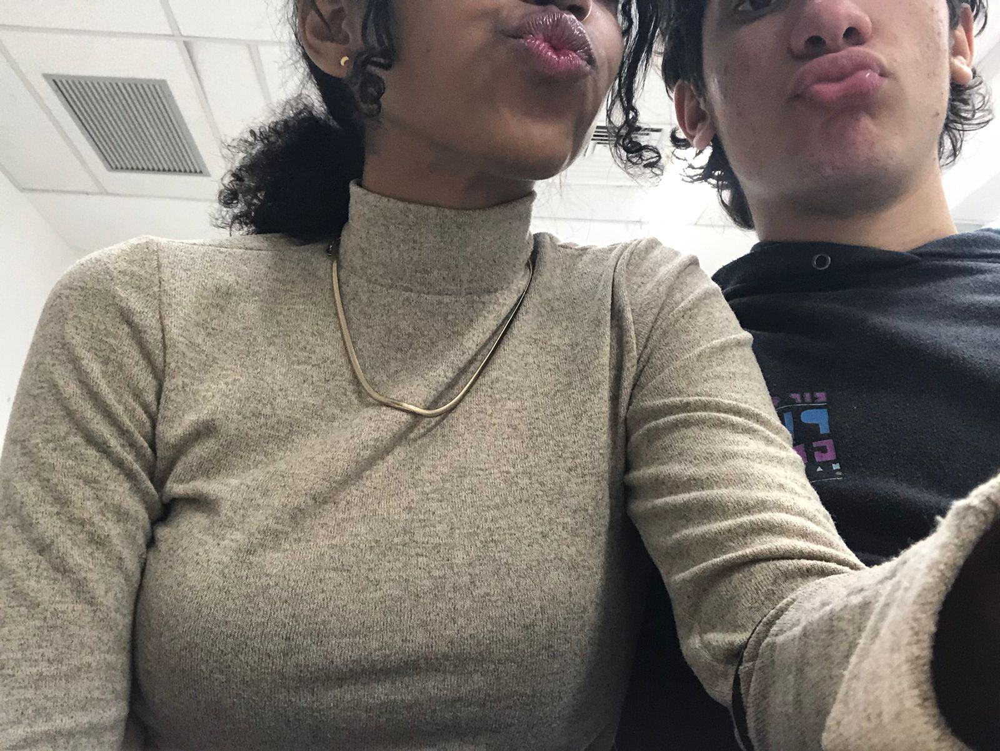
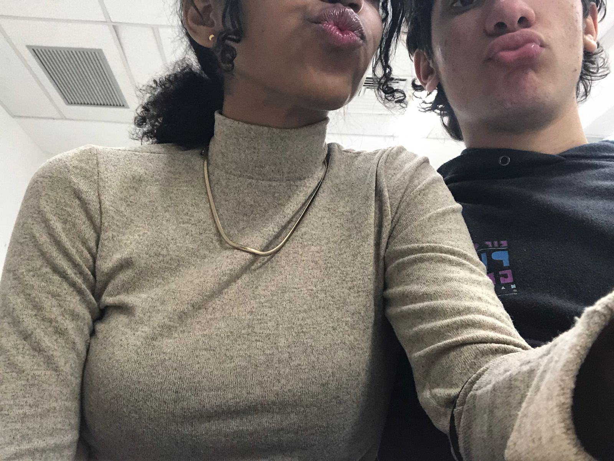

Diariamente eu tento te amar da maneira mais sincera possível. Esse site pode não ser o mais belo, nem o melhor construído e elaborado, mas é dos cafundós do meu coração, desconsidere a fajutez da estrutura e leve em consideração o carinho e afeto posto enquanto criava essa página. Estou utilizando os recursos que tenho ao meu alcance para expressar uma parcela dos meus sentimentos, visto que nao há maneira de expressá-los completamente.
Acredito que a maneira mais direta e precisa seja simplesmente falar, "você me deixa lelé", porque é resumidamente isso. É bizarramente incrível o que você faz comigo, mexe de todas as maneiras em mim sem ao menos tentar, papo de bruxaria mané. É até engraçado, porque enquanto estou digitando isso, estou lembrando de ti, e a simples memória de um sorriso teu, um olhar, já me desconstrói completamente, fico bobo, sorrindo pro nada. Minha mãe deve estar achando que eu enlouqueci, e de certa forma é verdade. Estou louco de amores. Pode parecer brega (é, na verdade), mas é basicamente o que anda ocorrendo dentro de mim, desde quando troquei a primeira conversa contigo na aula do Nilson em que ele fez um quiz sobre conhecimentos gerais de esporte.
Sim, você pode me chamar de obcecado, afinal, é verdade. Sim, pode me chamar de fã, pois também é verdade. Pode me chamar de chato, bobo, idiota e afins, pois é verdade; fico assim quando se trata de ti. Chato porque é minha love language; bobo, pois fico bobo de amores (brega mesmo); e idiota porque, novamente, é minha love language. É minha maneira de tentar te amar no dia-a-dia.
Ainda sou inexperiente no quesito romântico, sempre fui paciente quanto ao amor, e acredito que chegou o tão esperado momento do encontro com a mulher da minha vida. Caso eu esteja fazendo errado, me deixe saber, quero tratar tudo com maturidade, afinal, pra mim é inimaginável te perder, viver um futuro em que você nao esteja presente. Você é meu conforto, meu porto seguro, meu lar. Meu objetivo é de proporcionar o mesmo, ou até mais. Espero ser o homem da sua vida, prover segurança e conforto, buscarei prover apenas do bom e do melhor para ti, sentimental e materialmente. Acredito que a maneira como nos conhecemos não foi à toa, houve intervenção divina em diversas circunstâncias, portanto, espero que caminhemos juntos em terra, para que sejamos dignos das promessas de Cristo. Eu te amo absurdos.
 

Logicamente não descreve uma parcela do que sinto, porém achei muito show de bola, se liga só
Insanamente bem editado, eu que fiz hein
Olha, eu particularmente acho que você deve ser única e exclusivamente minha por todo o resto de nossa passagem pelo planeta Terra, da maneira mais egoísta, atrevida, individualista e egocêntrica possível. Mas isso tem pontos positivos, tá? Sou obcecado mas sou consciente. Vou até lançar uma listinha dos prós de se tornar o amorzin da minha vida pra todo o sempre, pra você analisar e aceitar mais pacificamente:
Espero que seja o suficiente, porque já te inclui em todos planos da minha vida, não seria nem um pouquinho bacana ter que refazê-los!!
No link abaixo, constam objetos que possuo extremo apreço. Abre aí pra ver po, ABRE AÍ
CLICA AQUI